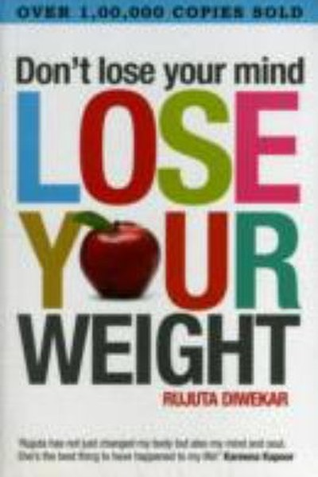

Library › Self-Improvement
Don't Lose Your Mind, Lose Your Weight — Summary & Key Lessons

The Indian guide to eating right, losing weight and keeping your sanity.
📖 OPEN THE FULL INTERACTIVE BREAKDOWN →🌐 Read it in Hindi, Hinglish, Gujarati, Tamil & 22 more languages — free, with audio.
💡 The Big Idea
Weight is not a food problem; it is a mind problem. Crash diets fail because they fight human nature and Indian food culture instead of working with them. Diwekar's framework: eat regular meals of local, seasonal food, exercise consistently at moderate intensity, sleep and de-stress, and stop treating your body as an enemy to be starved. The result is weight loss that survives contact with real life.
🧠 The 7 Key Lessons
Lesson 1: Diets Fail Because They Are Foreign
Why Diets Don't Work
Diwekar's blunt diagnosis: most diets are imported, extreme and unsustainable — they demand you give up everything your family, geography and taste buds know. The lesson: sustainability beats intensity. The best plan is the one you can follow through festivals, weddings, travel and stress. If a diet cannot survive your life, it is the diet that must go, not your life.
📖 Example: Indian clients told to eat only salads and oats either quit within weeks or binge — while those who kept roti, dal and seasonal vegetables stayed on track. The practical edge: 'diets fail because they are foreign' is not a one-time decision — it's a habit… Read the full example →
⚡ Do this: Write down what you ate last week that a typical 'diet' would ban. Instead of banning it, plan how to eat it in right portions and right timing.
Lesson 2: Never Skip Meals — Regularity Is the Rule
Meal Timing
Diwekar's non-negotiable: eat at regular times, never skip breakfast, never let yourself reach ravenous hunger. Skipping meals makes the body hoard fat and makes you overeat later. The lesson: the body runs on predictability — regular fuel intake keeps metabolism and mood stable. Irregular eating is a stressor; the body responds to stress by storing, not burning.
📖 Example: Clients who skipped lunch to 'save calories' consistently ate more at dinner than they saved — and their evening sugar cravings vanished once they ate proper midday meals. Read the full example →
⚡ Do this: Fix three meal times for this week and commit to them. Notice how much less you crave snacks between meals.
Lesson 3: Eat Local and Seasonal — Your Body Knows the Menu
Local Wisdom
Diwekar argues that local, seasonal food is nature's prescription for your climate and your genes — monsoon foods for monsoon months, winter foods for winter. Imported superfoods are marketing, not medicine. The lesson: ancestral eating patterns are a free, tested template. Instead of chasing the next exotic grain, look at what your grandmother's kitchen knew.
📖 Example: She points to seasonal fruits, millets in summer, ghee in winter and fermented foods as examples of traditional menus that are nutritionally brilliant and culturally natural. Read the full example →
⚡ Do this: This week, buy one seasonal local item from your market that you usually skip, and cook it in a traditional way.
Lesson 4: Exercise Regularly, Not Intensely
Training
The biggest workout mistake: heroic gym sessions that last two months and die. Diwekar prescribes the opposite — moderate, regular, enjoyable activity that becomes part of routine. Walking, yoga, sport — anything you can sustain beats anything you can't. The lesson: consistency is the only intensity that matters. One hour daily you enjoy is worth more than four hours weekly you dread.
📖 Example: Her clients who walked 45 minutes daily lost more over a year than those who did punishing gym cycles for three months and quit. In practice, 'exercise regularly, not intensely' shows up in tiny daily choices long before it shows up in outcomes — the choice… Read the full example →
⚡ Do this: Choose one physical activity you genuinely enjoy and schedule it for 30–45 minutes, five days this week — at a level you can repeat next week.
Lesson 5: Sleep and Stress Move the Scale
Mind and Metabolism
Weight is not only calories — cortisol from stress and sleep deprivation actively promote fat storage, especially around the belly. Diwekar's point: you cannot out-exercise a stressed, sleep-deprived life. The lesson: treat sleep and stress as part of the weight program. Fixing sleep, evening screens and mental load often moves the scale more than any diet change.
📖 Example: Clients on identical diets lost weight at different rates purely based on sleep quality — the sleep-deprived ones stalled despite perfect food logs. Most people nod at this principle and change nothing. The gap between agreeing and acting is where the whole… Read the full example →
⚡ Do this: Pick one sleep fix this week: fixed bedtime, no phone 30 minutes before sleep, or a 10-minute wind-down ritual. Track your weight trend alongside.
Lesson 6: Your Body Is a Friend, Not a Foe
Self Talk
Diwekar notices that people who hate their bodies fight losing weight — the body, treated as an enemy, defends itself. Self-criticism is a stressor, and stress stores fat. The lesson: change the relationship before changing the weight. Speak to your body with respect, dress well now, and make changes from self-care, not self-contempt. Weight follows kindness, not war.
📖 Example: She often tells clients to start by doing one nice thing for their body daily — a walk, good food, rest — before any calorie math. The uncomfortable truth about this lesson: it requires doing the boring version first — the unglamorous reps that nobody claps… Read the full example →
⚡ Do this: For one week, replace every negative body thought with a neutral or grateful one. Notice the shift in your motivation to eat well.
Lesson 7: Weight Is a Symptom, Not the Disease
The Bigger Picture
Diwekar's closing insight: weight gain is usually the visible tip of invisible problems — stress, poor sleep, irregular life, emotional eating, hormone imbalance. Chasing the number while ignoring the cause guarantees yo-yo. The lesson: diagnose the cause, not just the symptom. Fix the life patterns and the weight becomes a natural side effect, not a struggle.
📖 Example: The same diet works differently for a stressed executive, a new mother and a teenager — the cause is different, so the cure must be too. weight Is a Symptom, Not the Disease Read the full example →
⚡ Do this: List the likely non-food causes of your weight pattern (sleep, stress, timing, emotions). Pick the biggest one and address it for 21 days.
✅ 5-Step Action Plan
- Fix three regular meal times and never skip breakfast for a week.
- Add one local, seasonal food to your weekly menu.
- Schedule 30–45 minutes of enjoyable movement, five days a week.
- Implement one sleep fix and track its effect on cravings.
- Replace self-criticism with one act of self-care daily for 7 days.
⚠️ When This Doesn't Work
Diwekar's 'eat local, seasonal, regular' is the sanest nutrition advice of the decade — and Dean Foods is the industry's mirror: the largest milk company in America, built on 'milk is perfect, nothing changes,' and bankrupt in a decade because the category shifted under it. The book's own advice — adapt, don't cling to the old rules — applies to the book: food science moves, and 'ghee is good' today was 'ghee is bad' twenty years ago. Follow the principles of sanity, not the specific rules, or you'll be the Dean Foods of dieting.
💀 The Graveyard Proves It
⛏️ Herbalife of Bre-X — Bre-X: The Gold Mine That Was Salted Shavings. Burn: $6B market cap → $0. Read the full case study →
💬 Best Quotes from Don't Lose Your Mind, Lose Your Weight
- “Diets don't work; eating right does.”
- “The best diet is the one you can follow for the rest of your life.”
- “Your body is not your enemy — it is your most loyal friend.”
Interactive version: mark lessons as read, listen in your language, share quote cards.